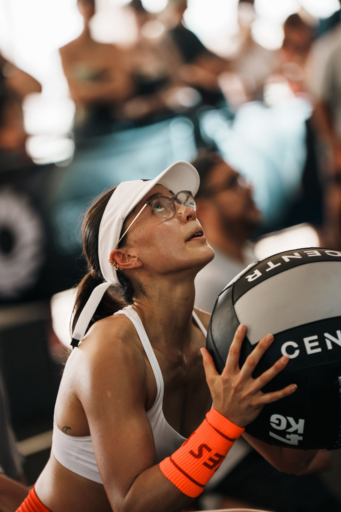
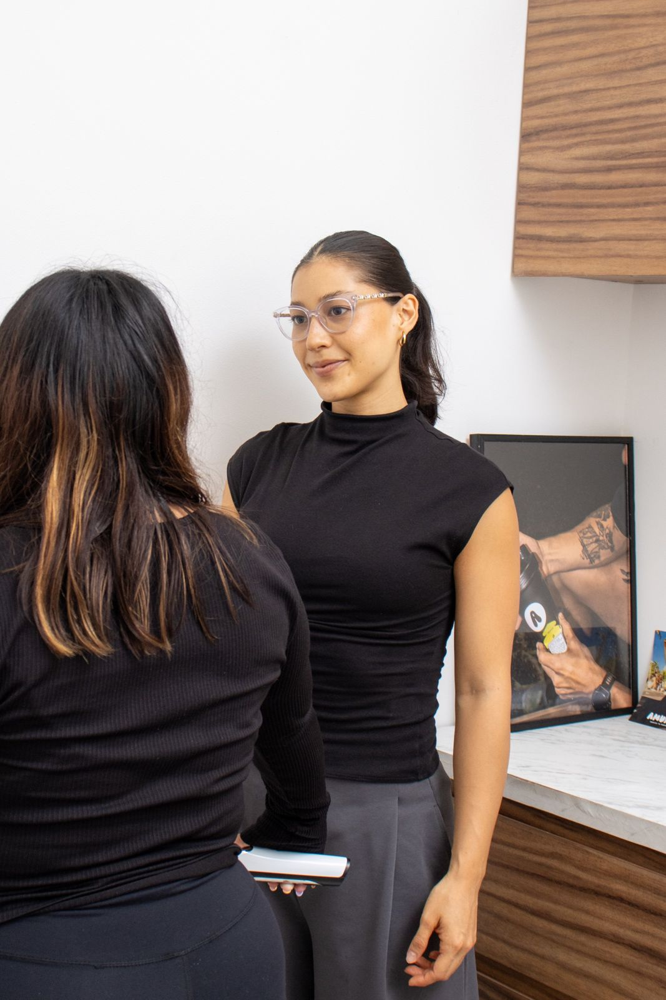
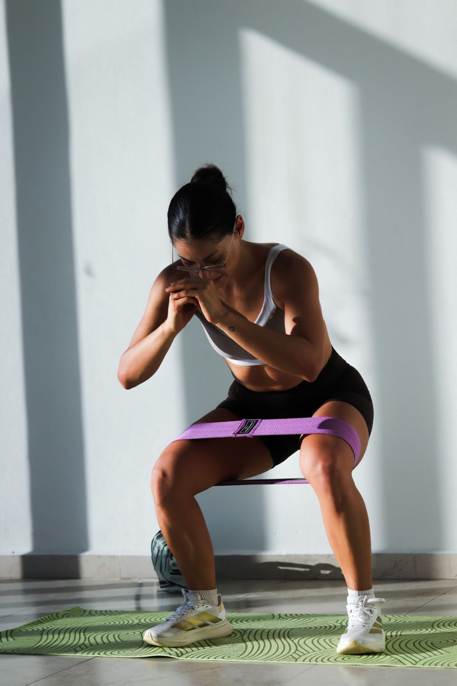
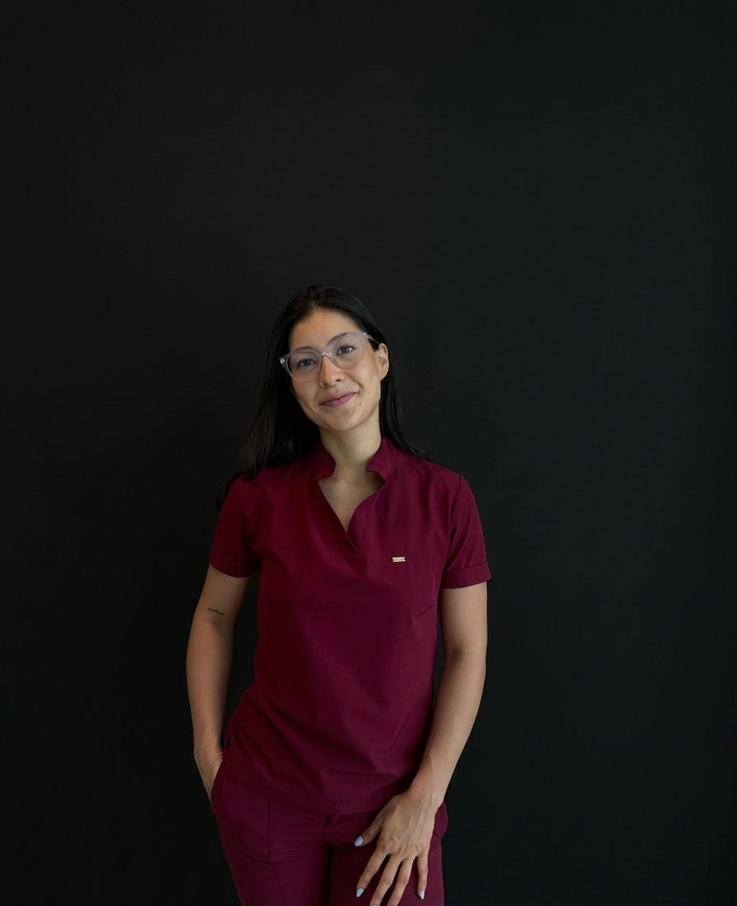
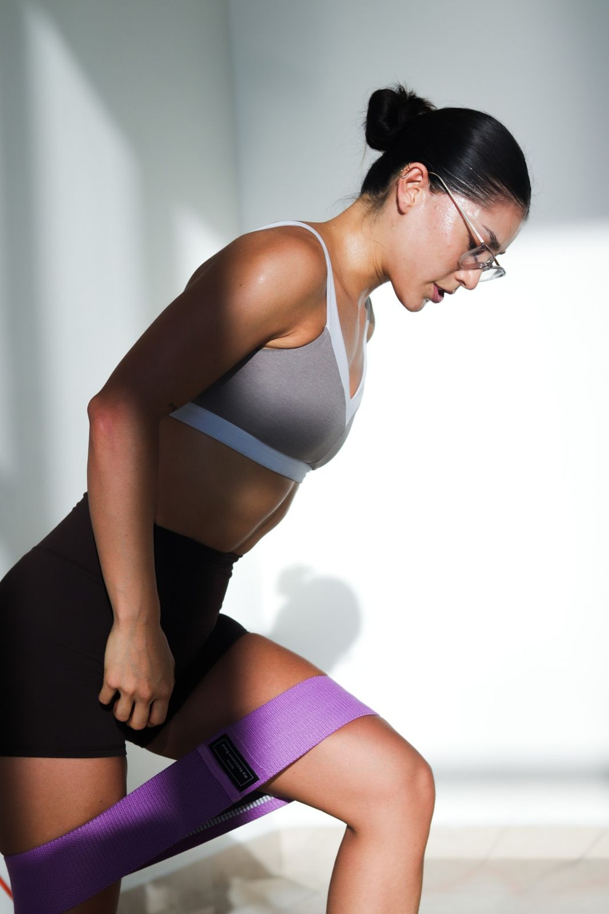
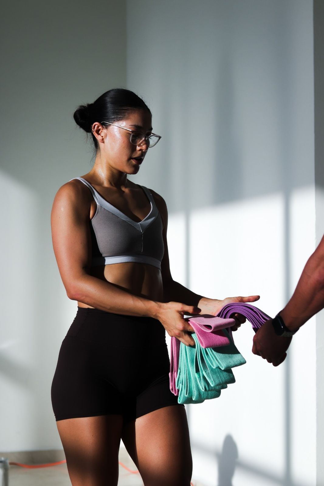
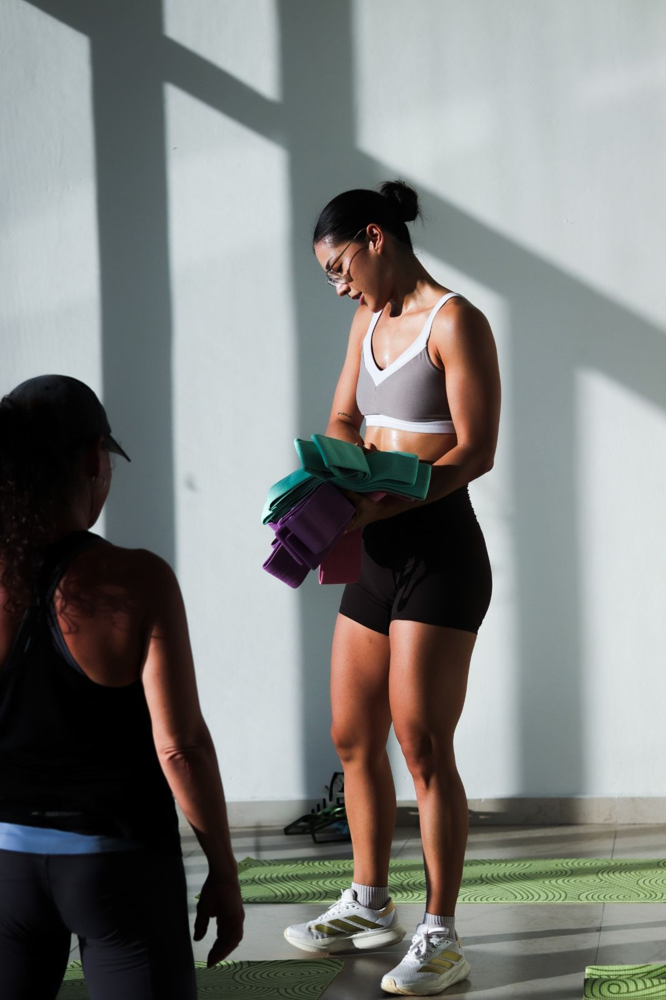

Valoración InBody
Porción1 sesión
Contiene: medición de músculo, grasa y agua; tu punto de partida y metas claras.
$500MXN
por sesión
Agendar por WhatsApp
por sesión
Comer no tiene por qué ser tan complicado. Nutrición y entrenamiento para quienes quieren sentirse fuertes, rendir más, tener energía y estar en paz con la comida.
Ingredientes: entender tu plato (equivalentes, plato saludable, etiquetas), nutrir sin restricción ni culpa (flexible y sostenible), funcionar (fuerza, energía y rendimiento medidos con InBody).
Puede contener: recetas ricas, Spanglish y emojis.

ValoraciónInBody$500Trabaja uno a uno con Ana o aprende a tu ritmo. Toca una caja para entrar.


Lo que puedes esperar en tus primeras cuatro semanas.
Medimos tu composición corporal con InBody. Sales con tu punto de partida y metas claras.
Aprendes a armar comidas con base en porciones, con todos los grupos de alimentos, y entiendes tus macronutrientes.
Sientes energía, vitalidad y flexibilidad. Ajustamos en cada seguimiento según tu progreso real.
Consérvese con seguimiento mensual. No requiere dietas restrictivas.
Aquí no vas a hacer otra dieta. Vas a aprender a comer para funcionar.
Agenda por WhatsAppUna guía para llevar una alimentación más balanceada, con recetas saludables para cocinar en casa. Para disfrutar de comer bien aunque no vayas a consulta.
Los nuevos títulos aparecen aquí en cuanto Ana los publica.
Tres presentaciones: comida, entrenamiento o las dos juntas. Cada una tiene un sistema claro y un punto de llegada que puedes medir.
Reto 01 · 30 días · 12 hábitos · 2 bases
Aprende a armar tu plato, haz tu súper con intención y acumula 12 hábitos reales sin dietas extremas. Sin contar calorías ni complicarte de más.
Empezar de nuevo cada lunes cansa. Restringirte por completo hasta que llega el rebote o la culpa tampoco funciona.
Este reto te da un sistema claro, práctico y sostenible: primero dominas las dos bases —tu plato y tu súper— y, semana a semana, sumas 3 hábitos acumulativos hasta llegar al día 30 con 12 hábitos integrados a tu ritmo de vida.
No necesitas pesar cada gramo. Usa tu plato como guía visual para equilibrar volumen, estructura, energía y saciedad.
Crudas, asadas, al vapor o en ensalada. Dan volumen, fibra y saciedad sin complicarte.
Pollo, huevo, pescado, atún, carne magra, tofu, yogurt griego/skyr o queso cottage.
Arroz, papa, camote, tortilla de maíz, avena o pan integral.
Aguacate, aceite de oliva extra virgen, nueces, almendras, semillas.
Haz tu compra antes del Día 1 con estas categorías para tener lo necesario en casa y evitar improvisar.
Nota: no necesitas comprar todo. Decide qué quieres comer esta semana y compra solo lo necesario.
04 · EjemplosIdeas para aplicar tu plato en cada momento del día.
Plato completo: proteína + carbohidrato + verduras + grasa.
Ligera y práctica: proteína + carbohidrato + verduras + grasa.
Fórmula: proteína + fibra. Algunas ideas:
Cada semana sumas 3 hábitos nuevos sin soltar los anteriores. Para el Día 30 tendrás 12 hábitos clave activos.
Arrancar bien y anclar el plato.
Limpiar bebidas y comer presente.
Resolver el día a día y la fricción.
Cierre nocturno, flexibilidad y ajuste.
Marca cada día que cumplas. Los hábitos de semanas anteriores se quedan activos. Tus marcas se guardan en este navegador.
| L | M | M | J | V | S | D | |
|---|---|---|---|---|---|---|---|
| 1. Agua al despertar | |||||||
| 2. Proteína en desayuno | |||||||
| 3. ½ plato de verduras |
| L | M | M | J | V | S | D | |
|---|---|---|---|---|---|---|---|
| 1–3. Hábitos de semana 1 | |||||||
| 4. Cero bebidas azucaradas | |||||||
| 5. 1 comida sin pantallas | |||||||
| 6. Masticar con calma |
| L | M | M | J | V | S | D | |
|---|---|---|---|---|---|---|---|
| 1–6. Hábitos anteriores | |||||||
| 7. Mini pre-prep (45–60 min) | |||||||
| 8. Snack proteína + fibra | |||||||
| 9. Plan B para días pesados |
| L | M | M | J | V | S | D | |
|---|---|---|---|---|---|---|---|
| 1–9. Hábitos anteriores | |||||||
| 10. Cena ligera + sin pantallas | |||||||
| 11. 80/20 sin culpa | |||||||
| 12. Check-in domingo (5 min) |
Para ti si ya te cansaste de empezar cada lunes, de restringirte hasta el rebote o la culpa, y quieres un sistema claro y sostenible que se adapte a tu ritmo de vida.
Entrenamiento para la vida real: levantar, empujar, jalar, cargar y moverte con energía. Tres bloques, de la técnica a la potencia, con un test al inicio y otro al final.
3 sesiones de fuerza + 2 caminatas de 30 min por semana. 3 series de 10 a 12 repeticiones, esfuerzo 6–7 de 10. Aprendes la técnica de cada movimiento antes de cargar más.
4 sesiones por semana. 4 series de 6 a 10 repeticiones, esfuerzo 7–8 de 10, y un EMOM de 8 minutos al final (un ejercicio al inicio de cada minuto). La semana 6 es de descarga: 30 % menos volumen.
4 sesiones + 1 opcional. Fuerza de 3 × 5–8, circuitos AMRAP de 12 a 15 minutos, intervalos 30/30 y estaciones tipo Hyrox adaptadas a tu nivel.
| Sentadillas | Repeticiones en 60 segundos |
|---|---|
| Lagartijas | Repeticiones en 60 s, completas o con rodillas apoyadas |
| Plancha | Tiempo máximo con buena técnica, tope de 2 minutos |
| Zancadas | Repeticiones alternas en 60 segundos |
| 1 km | Tiempo caminando, trotando o combinando |
| Formato | 3 a 5 rondas según tu nivel |
|---|---|
| Por ronda | 13 sentadillas goblet · 13 remos · 13 swings · 13 lagartijas · 13 zancadas |
| Total | 65 repeticiones por ronda |
| Cuándo | Día 65, después del test final |
Entrenar sin comer suficiente no funciona. Si quieres resultados completos, combina este reto con el de 30 días o haz el de 120.
Nutrición y entrenamiento trabajando en equipo. Cuatro fases de 30 días en las que pasas de seguir un plan a decidir por tu cuenta, con valoraciones y seguimiento de Ana.
Tu plan nutricional a tu medida + los 12 hábitos de Comida Real & Bases.
EntrenoBloque Base: técnica, 3 sesiones + 2 caminatas.
Día 0: valoración InBody, consulta y test inicial.
Entiendes tus macronutrientes y qué comer antes y después de entrenar.
EntrenoBloque Fuerza: 4 sesiones con progresión de cargas.
Días 30 y 60: seguimiento y ajuste según tu progreso real.
Proteína y recuperación, fines de semana, viajes y comer fuera.
EntrenoBloque Potencia: circuitos, intervalos y estaciones tipo Hyrox.
Día 90: InBody de control y test parcial.
Autonomía: armas tus comidas sin depender del plan.
EntrenoPreparación para el evento final: simulacro tipo Hyrox adaptado o 5K.
Día 120: InBody final, comparación completa y plan de mantenimiento.
Medimos con datos, no con la báscula: músculo, grasa y agua en cada fase.
| Valoraciones | InBody en los días 0, 30, 60, 90 y 120 (presencial en Cancún) |
|---|---|
| Online | Medidas, fotos y test funcional en lugar de InBody |
| Plan | Nutricional a tu medida, ajustado en cada seguimiento |
| Entreno | 4 bloques progresivos para casa o gimnasio |
| Para quién | Quieres un cambio real y medible, o te preparas para una meta deportiva |
Ana corre medios maratones y compite en Hyrox: el evento final está pensado para que vivas lo que se siente llegar preparado.
Si dudas, empieza por el de 30 días. Si quieres el cambio completo, el de 120.
| Característica | 30 · Comida Real & Bases | 65 · Fuerza funcional | 120 · Fuel to Function |
|---|---|---|---|
| Enfoque | Alimentación | Entrenamiento | Nutrición + entrenamiento |
| Plan | 2 bases + 12 hábitos acumulativos | Programa de 3 bloques | Plan nutricional a tu medida + 4 bloques |
| Tiempo | Hábitos diarios + 45–60 min de pre-prep a la semana | 35 a 50 min por sesión | Sesión + registro |
| Medición | Habit tracker semanal + check-in cada domingo | Test día 1 y días 64–65 | InBody o medidas en 5 momentos |
| Consulta con Ana | No incluye | No incluye | Sí, en cada fase |
Lo que más preguntan antes de empezar un reto.
No. Trabajas con porciones y con los 4 grupos de alimentos. En el reto de 120 días Ana hace los cálculos por ti y los convierte en comida real.
No es obligatorio. Con bandas, un par de mancuernas o una kettlebell y un tapete puedes hacerlo en casa. En el gimnasio tendrás más opciones de carga.
Nada. No se reinicia el reto ni se compensa. Retomas en la siguiente comida o sesión: aprender a volver también es parte del reto.
No. Aquí no hay restricción ni culpa: aprendes porciones y momentos para que cualquier comida quepa en tu vida.
Sí. El primer bloque es para aprender la técnica y cada ejercicio tiene una versión más sencilla. Avanzas a tu ritmo.
Sí, online. En lugar de InBody usamos medidas, fotos y el test funcional para seguir tu progreso.
Antes de empezar: consulta a tu médico, sobre todo si tienes una condición médica o lesión, tomas medicamentos o estás embarazada o en lactancia; en esos casos participa solo con supervisión profesional. Los retos de 30 y 65 días son programas generales y no sustituyen una consulta ni un plan personalizado. Si sientes dolor agudo, mareo o falta de aire al entrenar, detente.
Si quieres un plan hecho para ti desde hoy, la consulta nutricional incluye valoración InBody y un plan a tu medida.

Llegué a la nutrición por un disconfort con mi propio cuerpo. Después de dietas restrictivas y profesionales poco empáticos, decidí acercarme a la comida desde el lado humano, pero también científico.
El deporte pasó por algo parecido: empezó como una forma de bajar de peso y hoy es refugio, recuperación y parte de mi estilo de vida.
| Formación | Lic. en Nutrición · Universidad Anáhuac Cancún · 2026 |
|---|---|
| Certificación | ISSA · International Sports Sciences Association · 2024 |
| Experiencia | 2 años · 150 a 200 personas acompañadas |
| Deporte | Medios maratones y Hyrox |
| Atiende en | Consultorio en Cancún · Online |
Entrenamiento de fuerza con bandas, en sesiones personales y en grupo.



Lo que vas a encontrar y lo que nunca vas a encontrar aquí.